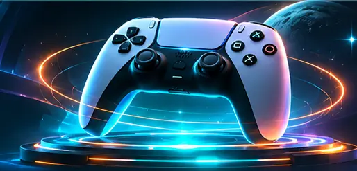

🎮 PlayStation 5
Wähle vor dem Kauf die gewünschte Konsolenvariante und prüfe die verfügbaren Anschlüsse, das mitgelieferte Zubehör und die Händlerangaben.
Konsolen bei Amazon suchenPlayStation, Xbox, Nintendo und Gaming-Handhelds auf einer eigenen Seite. Mit klaren Auswahlhinweisen und direkten Suchlinks zum Händler.

Werbung: Die folgenden Links führen zu Amazon-Suchergebnissen, nicht automatisch zu einem einzelnen Produkt. Preise und Verfügbarkeit sind nicht live bestätigt.
Wähle vor dem Kauf die gewünschte Konsolenvariante und prüfe die verfügbaren Anschlüsse, das mitgelieferte Zubehör und die Händlerangaben.
Konsolen bei Amazon suchenVergleiche Varianten, Spiele-Kompatibilität und Lieferumfang. Die aktuellen Angebote findest du beim Händler.
Konsolen bei Amazon suchenPrüfe Paketinhalt, passende Spiele, Controller und regionale Angebotsbedingungen.
Konsolen bei Amazon suchenVergleiche Betriebssystem, unterstützte Spiele, Akkulaufzeit und Ergonomie.
Konsolen bei Amazon suchen